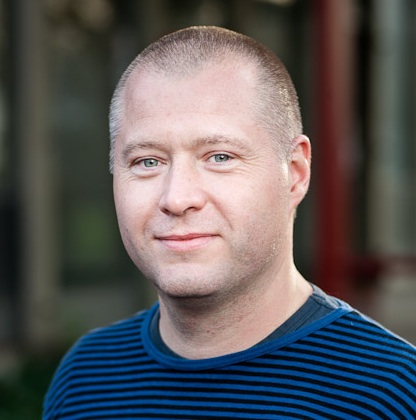

| Affiliation: | IMAGE section, Department of Computer Science (DIKU) |
| Digital Collections & Archives, Natural History Museum of Denmark (NHMD), | |
| Science & Society research section, Natural History Museum of Denmark (NHMD) | |
| University of Copenhagen, Denmark. | |
| Postal Address: | Department of Computer Science (DIKU), University of Copenhagen |
| NBB BA1, varemodtagelsen | |
| Jagtvej 128 | |
| 2200 København N | |
| Denmark | |
| Att: Kim Steenstrup Pedersen, Room 3.2.03, DIKU UP1 | |
| Offices: | DIKU: Room 3.2.03, Universitetsparken 1. NHMD: Room 2.2.205, Universitetsparken 15 |
| Email: | kimstp@di.ku.dk / kimstp@snm.ku.dk |
| Phone: | (+45) 61 37 45 29 |
| Github: | github.com/kimstp |
| ORCID: | 0000-0003-3713-0960 |
| Google Scholar: | RzH2vKQAAAAJ |
| Linkedin: | kimstp |
| DBLP: | Profile |
| OpenReview: | ID: ~Kim_Steenstrup_Pedersen1 |
| ReSearcher.cc: | Profile |
| ResearcherID: | L-8748-2016 |
| WikiData: | Q28601608 |
Kim Steenstrup Pedersen received his M.Sc. degree in 1999 and his Ph.D. degree in 2003, both in computer science from Department of Computer Science (DIKU), University of Copenhagen, Denmark. He also holds a B.Sc. degree in physics from the University of Copenhagen. During his Ph.D. studies he spent half a year in the spring of 2001 at Division of Applied Mathematics, Brown University, Rhode Island, USA. After his Ph.D. he was briefly employed as an assistant research professor at DIKU. From spring 2003 throughout 2006 he was assistant professor at the IT University of Copenhagen, Denmark. He currently holds a position as full professor jointly at DIKU and the Natural History Museum of Denmark (NHMD). He was vice head of department for teaching from 2009 to 2012 at DIKU and Head of the research section for Image Analysis, Computational Modelling and Geometry (IMAGE) at DIKU. He is also co-founder, co-owner, and CTO of the company DigiCorpus ApS which develops computer vision based tools for aiding physiotherapy. He is currently Head and Curator of Digital Collections at NHMD and the GBIF Head of Delegation for Denmark.
His primary research interests include topics from computer vision, image analysis and machine learning, especially object recognition and detection, tracking and motion models, stochastic image models, and natural image statistics. He has made contributions to the theoretical foundations of low-level vision, including applications of machine learning to low-level vision, scale space theory, articulated tracking of human motion, and image features and applications thereof. He is currently working with applications of computer vision within natural history collections, biodiversity monitoring, food industry, agriculture, precision farming, and sports analytics. Examples of current research activities includes: Phenotyping of pinned insects by learning morphological traits from specimen images and combining with molecular data such as selected genes; Refractive multi-view 3D reconstruction; Deep learning methods incorporating domain specific knowledge for hyperspectral images. He has, in the past and present, several research collaborations with partners from industry with current examples being FOSS Analytics and the ClimbAlong sports analytics project with NorthTech ApS.